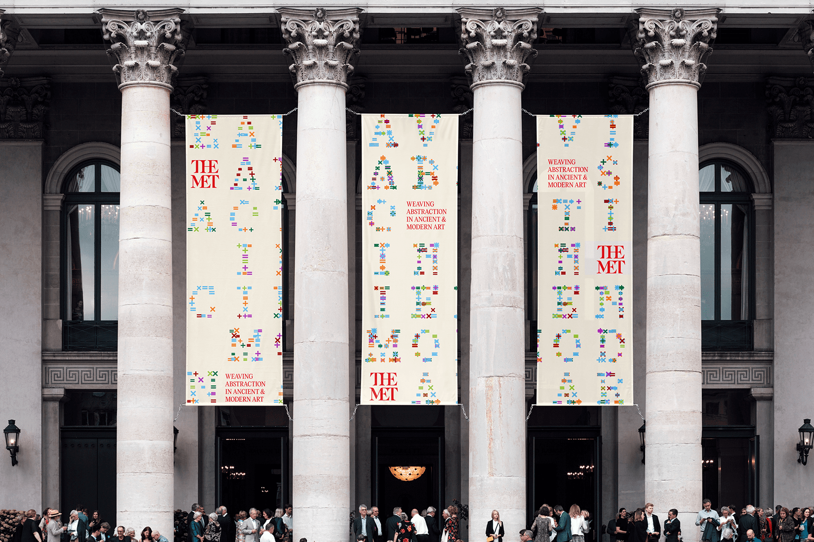

The Met Community Driven Design
(creative coding) (type design) (branding) (web design) (exhibition design)
In → Spring 2024
Under → Talia Cotton
Add Your Weave!Under → Talia Cotton
Weaving Abstraction in Ancient and Modern Art is an exhibition at the Met displaying textiles spanning not only centuries, but continents. The unique textiles are brought together through the use of similar colors, materials, grids, and techniques. By identifying the fundamental form of patterns & shapes in weaving and translating them into ASCII symbols, a custom type has been designed through code. Visitors of the exhibition or website would be prompted to add their own data-driven symbol to the communal weave, leaving their mark on the typography. Uses firebase!


